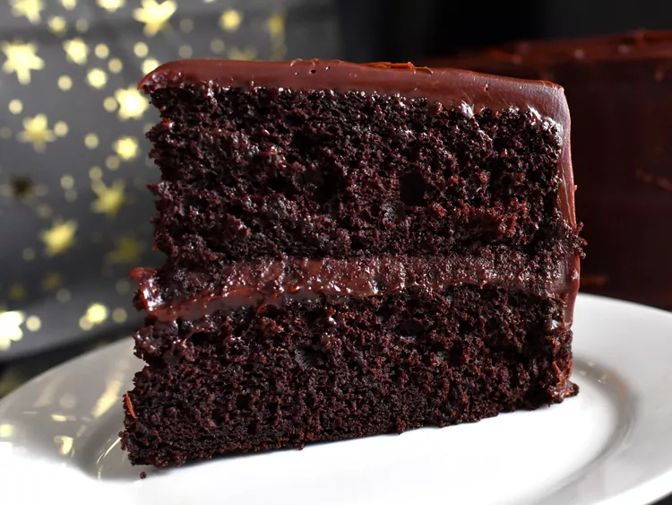

Chocolate Stout Cake

Description
A chocolate stout cake is a type of cake that is made with stout beer,
such as Guinness, and cocoa powder, giving it a rich and moist texture and
a deep chocolate flavor. The stout beer also enhances the sweetness and
complexity of the cake, and adds a slight bitterness that balances the
sugar. A chocolate stout cake can be frosted with various toppings, such
as chocolate ganache, buttercream, whipped cream, or cream cheese
frosting. Some recipes also add Irish cream liqueur to the frosting, to
create a contrast between the dark cake and the light frosting, and to
echo the Irish origin of the stout beer. A chocolate stout cake is a
decadent and delicious dessert that is perfect for celebrating special
occasions, such as St. Patrick's Day, birthdays, or anniversaries.
Ingredients
- Flour
- Sugar
- Cocoa powder
- Baking powder
- Baking soda
- Salt
- Eggs
- Butter or oil
- Sour cream
- Vanilla extract
- Stout beer
- Chocolate chips
- Heavy cream
- Irish cream liqueur (optional)
Steps
- Preheat the oven to 350°F and prepare your cake pans.
-
In a saucepan, melt the butter and stout beer together, then whisk in
the sugar and cocoa powder.
-
In a large bowl, whisk the eggs, sour cream, and vanilla extract
together, then add the stout mixture and whisk until smooth.
-
In another bowl, whisk the flour, baking soda, and salt together, then
add to the wet ingredients and stir until well combined.
-
Pour the batter into the prepared pans and bake for 25 to 35 minutes, or
until a toothpick inserted in the center comes out clean.
- Let the cakes cool completely on a wire rack before frosting.
-
To make the frosting, chop the chocolate and place it in a heatproof
bowl. Heat the cream in a saucepan until simmering, then pour over the
chocolate and stir until melted and smooth. Stir in the vanilla extract
and refrigerate until thick enough to spread.
-
If using Irish cream liqueur, whip it with some butter and powdered
sugar until fluffy and smooth
-
To assemble the cake, trim the tops of the cake layers if needed, then
place one layer on a serving plate. Spread some frosting over the top,
then repeat with the remaining layers. Frost the sides and top of the
cake with the remaining frosting, and decorate as desired.